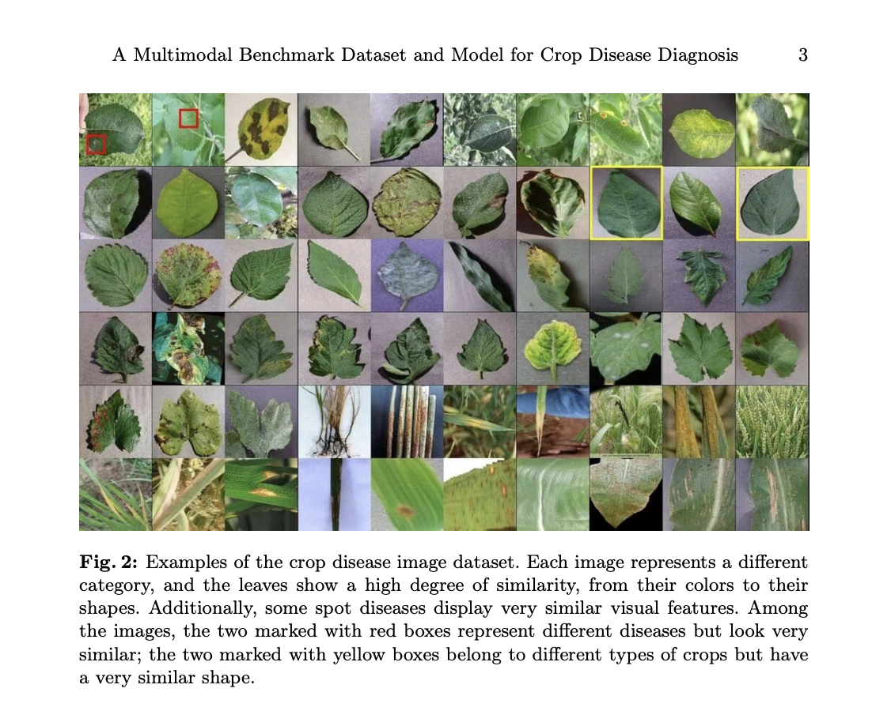

AgriGemma-3n Preview: On-Device Agricultural Intelligence
Transforming crop disease diagnosis with on-device multimodal AI
Introduction
Every year, crop diseases destroy approximately 20-40% of global agricultural production, translating to economic losses exceeding $220 billion. For smallholder farmers in developing regions, these losses can mean the difference between prosperity and poverty. While agricultural experts exist, their reach is limited. For instance in Sub-Saharan Africa, the ratio of extension workers to farmers can be as low as 1:1000.
Traditional computer vision approaches to crop disease diagnosis, while technically impressive, fail to bridge the knowledge gap. They can identify diseases but cannot engage in the nuanced, conversational support farmers need: understanding symptoms, explaining disease progression, recommending context-appropriate treatments, and personalized assistance.
The AgriGemma-3n Model Suite
We believe AgriGemma-3n can transform crop disease diagnosis. Built on Google's efficient Gemma-3n architecture, our models combine:
- Visual Understanding: Fine-tuned to recognize crop diseases from images with high precision
- Domain Expertise: Trained on extensive agricultural knowledge covering diagnosis, prevention, and treatment strategies
- Conversational Intelligence: Capable of multi-turn discussions that mirror consultations with agricultural experts
- On-Device Deployment: Optimized to run on mobile devices with limited connectivity
The model suite includes two variants:
- AgriGemma-3n-E2B-it
- AgriGemma-3n-E4B-it
Training and Dataset
We fine-tuned the Gemma-3n models using a comprehensive LoRA-based strategy that enables the model to learn domain-specific visual features critical for accurate diagnosis while maintaining conversational abilities. Unlike conventional approaches that freeze visual encoders during fine-tuning, we recognized that agricultural images present unique challenges—subtle disease symptoms, similar-looking conditions across different crops, and fine-grained visual patterns that general-purpose encoders struggle to differentiate.
We used 9,000 samples from the Crop Disease Domain Multimodal Dataset (CDDM). The complete dataset contains:
- 137,000 images spanning 60 disease categories across 16 major crops
- 1 million Q&A pairs covering diagnosis, prevention, and treatment
- Expert-validated annotations
- Balanced distribution across crop types and diseases
Multimodal Capabilities
AgriGemma-3n is a truly multimodal model that can process both images and text, enabling farmers to simply take a photo of their crops and ask questions in natural language. The models run entirely on-device after initial download, ensuring privacy and functionality even in areas with limited internet connectivity.
Live Demonstrations
Mobile Demo
Desktop Demo (Ollama)
For detailed instructions on running these models locally on mobile apps or desktop, please visit our GitHub repository.
Impact and Future
AgriGemma-3n demonstrates that specialized, efficient AI models can address real-world challenges faced by billions of people globally. We believe that in the near future very powerful models generalized for any applications will be able to run locally on-device, maximizing both human privacy and agency, as well as enhancing human intelligence augmentation.